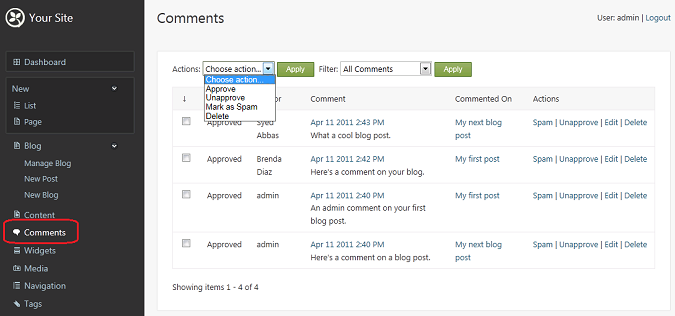
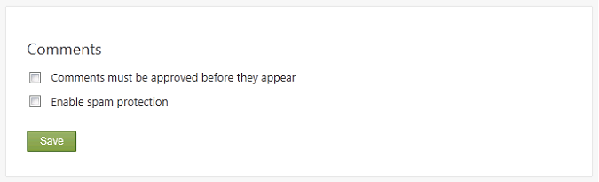
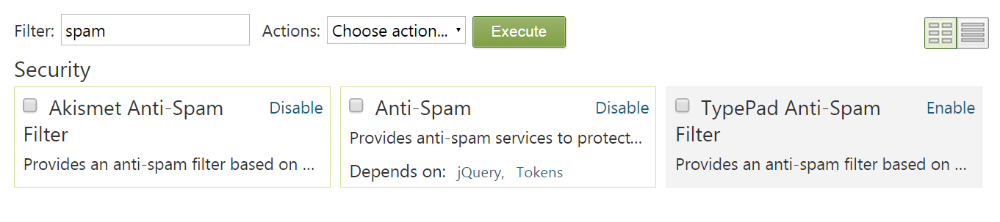
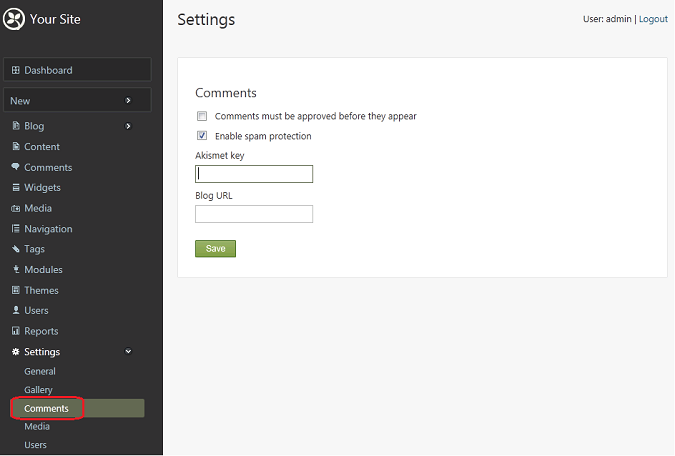

The Comments feature of Orchard provides the ability to monitor and manage the comments for content items on your site. This topic describes two sets of tools that Orchard provides for working with site comments: tools for managing existing comments, and site-level settings for comments.
Managing Comments
To access the comment management screen, click Comments on the Orchard dashboard.

The Comments screen lists the comments across all content items in your site. It can also display a filtered list that shows all comments by administrative category ("pending", "approved", or "spam"). If you want to carry out a bulk administrative task that applies to many comments, select the comments you want, and then use the Actions drop-down list to apply an action such as Approve or Unapprove.
Note If you want to manage just the comments for a specific content item, such as a page or a blog post, edit the content item. In edit mode, there is an option to display and manage comments for that item. The screen for editing comments that are linked to a content item is identical to the Comments screen, except that it only shows comments from the specific content item.
In the Comments screen, click Edit next to an approved comment. A screen for editing the comment is displayed.

Click Pending to change the comment status, and then save the comment. Browse to your site and view the content item for which you changed the comment category to "pending". The pending comment is no longer visible.
You can assign comments to the following categories:
- Pending. The comment is pending administrator approval. The comment will not be visible to users unless an administrator marks it as "Approved".
- Approved. The comment is approved and will appear on the site. This is the default category for new comments unless you enable the site-level setting to require approval of all comments. (See the next section.)
- Mark as spam. The comment is spam and will not displayed. For more information, see the next section.
Setting Site-Level Comment Options
Orchard provides two site-level features for comments: administrative approval of comments and spam protection. You can access both features by clicking Settings > Comments on the dashboard to open the screen for setting comment options.
Requiring Approval for Comments
You might want to require moderator approval of comments before they become visible on the site. As the previous illustration for editing comments shows, by default, comments are approved and visible. However, if you enable the site-level setting to require approval of comments, new comments will default to the "pending" category and will not be displayed until they are approved.
To require approval of comments, click Settings > Comments in the dashboard. A screen appears for managing site-level comment settings.

Select Comments must be approved before they appear and then save the settings. After you have enabled this setting, you will need to review all new user comments in the Comments screen, and for the comments that you want to allow on the site, change their status from "pending" to "approved".
Enabling Spam Protection
The spam-protection feature helps to automatically categorize certain comments as spam so that you can prevent them from being displayed in your site.

To implement spam protection, Orchard uses Akismet spam protection, which reviews comments as they are posted. When Akismet detects a comment that fits the criteria for spam, it automatically assigns it to the Mark as spam category.
To enable the Akismet spam protection feature on a site, do the following:
- Obtain an Akismet key from Akismet.com.
- Enter your Akismet key in the field.
- Save the updated setting.

After you enable spam protection in your site, you can use the Comments screen described earlier to select the comments that are marked as spam, review them, and delete the comments that really are spam.
Change History
- Updates for Orchard 1.8
- 3-28-11: Updated existing screens for site level comment and anti-spam settings.
- Updates for Orchard 1.1
- 3-28-11: Updated existing screens, added new step showing how to require pre-approval of comments.